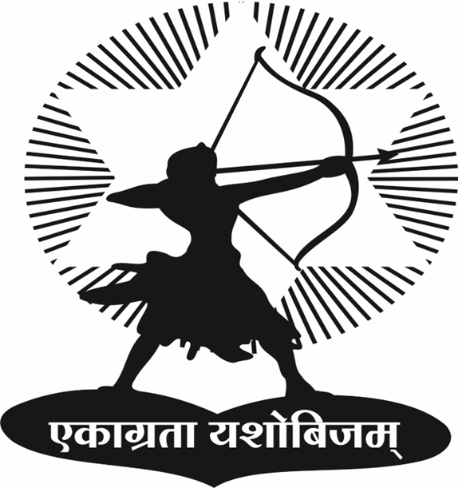

Gramonnati Mandal’s
Tatyasaheb Bhujbal Agri Polytechnic & Dairy Institute (LMDP)
Affiliated to Maharashtra Animal & Fishery Sciences University, Nagpur
Menu
Home
About Institute
Faculty & Staff
Admissions
Syllabus
Gallery
Contact Us
Faculty & Staff
Principal
Assistant Professor – Dairy Science
Assistant Professor – Animal Husbandry
Theme
Default
Ocean
Sunset
Slate
Violet
Emerald